Don Mario — Parrilla argentina, Cavenago di Brianza

Cavenago di Brianza
Scopri
L’arte argentina della carne
La passione della parrilla · Il piacere di stare a tavola
Un luogo in cui la cultura argentina incontra la ricerca della qualità, il rispetto della materia prima e il piacere dell’ospitalità.
Don Mario in tre capitoli